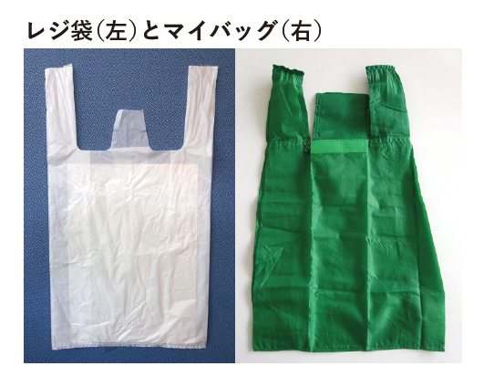
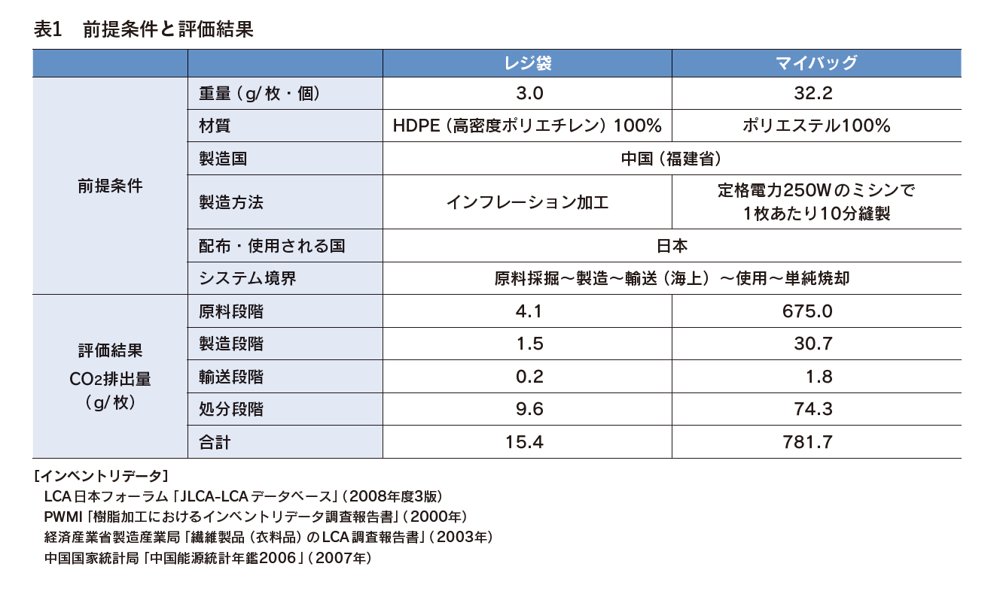
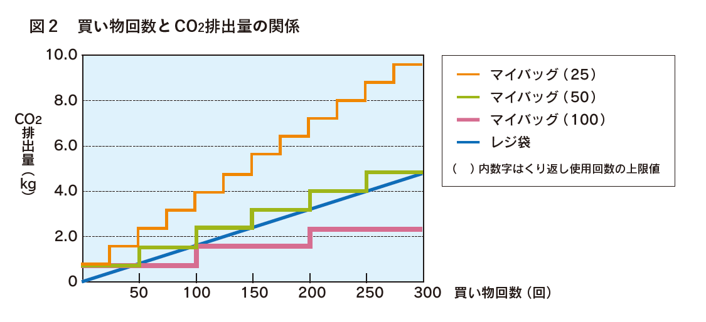

私たちの生活に身近な「レジ袋」の環境負荷をLCA的な視点で考えるために、レジ袋とマイバッグのCO2排出量の分析事例を紹介します。
◆レジ袋をめぐる近年の動き

「レジ袋」とは、スーパーやコンビニなどのレジで配られる高密度ポリエチレン（ HDPE ）製の買物袋です。1970年代半ば頃から、強く、軽い、かさばらないといった利点から、紙袋に代替して広く普及し、今では私たちの生活に馴染み深いものとなっています。
レジ袋は、品質が安定していることから、自然環境下に放置しても簡単には分解しません。このため、散乱すると、見た目もよくありませんし野生動物が餌と間違えて食べてしまう心配もあります。道端にレジ袋が落ちているのを目にすることがときどきありますが、これはとても残念なことで、私たちはレジ袋を絶対にポイ捨てしないようにしなければなりません。ただ商品を入れて持ち帰られたレジ袋の多くは、次の買物やごみ入れの袋として使われています。スーパーの回収ボックスへの持ち込みや、地域のごみ分別ルールに従い集められたレジ袋の中にはリサイクルされるものもあります。
このような中、我が国では、近年、レジ袋を巡る動きとして、レジ袋に替えて何度も使える「マイバッグ」（エコバッグ）の使用を奨励する取り組みが活発となっています。レジ袋を断ると割引をする、ポイントを付けるなどのサービスを提供するお店も増えています。この大本には、「レジ袋は環境に悪い」、「レジ袋は有限資源の無駄遣いだ」といった考え方があるといえるでしょう。
環境にできるだけ負荷をかけない製品、有限な資源を無駄にしない製品を選択して使うということは、そのとおりであって、誰にも異論のないところです。しかしここで大切なのは、レジ袋は環境に負荷をかけるがマイバッグは負荷をかけないといえるのかを科学的に検証することです。そしてこの検証を行ううえで LCA は有力な手段となります。レジ袋とマイバッグのCO2排出量についてLCA の事例を通し考えていきましょう。
◆調査の目的
レジ袋はどれくらい CO2を排出し、マイバッグを使うことでどれだけ抑制されているのか、レジ袋とマイバッグの CO2排出量を算出した調査報告（眞弓和也ほか「環境配慮行動支援のためのレジ袋とマイバッグの LCA 」第４回日本 LCA 学会研究発表会講演要旨集 2009年）を紹介します。
◆インベントリ分析
この報告では、レジ袋とマイバッグ各１種類について、原料調達から廃棄処分までの CO2排出量を比較しています。算出にあたり設定された前提条件と評価結果は表１のとおりです。
◆分析結果
表によれば、マイバッグ１個あたりの CO2排出量は、レジ袋１枚の約50倍になっています。これはマイバッグの重量がレジ袋の約10倍あること、また原料・製造段階でのポリエステル生地製造（樹脂溶融→紡糸→原綿→紡績糸→織布→裁断→袋加工）にかかる環境負荷が段違いに重いことによるもので、マイバッグの使用条件によってはレジ袋よりも環境負荷の増大につながる可能性があることを示唆しているともいえます。

さらにこの調査では、買い物回数（マイバッグの使用回数）と CO2排出量の関係も試算しています。図２は、レジ袋と、使用に耐える回数の違う3種類のマイバッグについて、買い物回数が増えると CO2排出量がどうなるかを示したものです。1回1枚使用で使い捨てのレジ袋は、CO2排出量が直線状に増加していきます。一方マイバッグは、それぞれの耐用使用回数の上限値（ 25、50、100回）に到達した時点で同じ耐久性のマイバッグに交換しなければならないため、交換の都度、階段状にCO2排出量が増加することになります。マイバッグ（ 50回）では買い物回数50回ごとにようやくCO2排出量がレジ袋と等しくなります。また、マイバッグ（ 25回）では頻繁に交換が必要なため、CO2排出量はレジ袋よりも常に上回ってしまいます。逆にマイバッグ（ 100回）は買い物回数50回目まではレジ袋より CO2排出量が多かったものの、それ以降は常にレジ袋より少なくなっています。

◆結果の解釈
図２から、マイバッグについては、耐久性のよいものなら環境負荷低減に貢献するが、頻繁に交換が必要なものはレジ袋よりも環境負荷が大きくなる場合があるということがわかります。ところでこの調査では、マイバッグは一定使用回数ごとに新しいものに交換するものとしていますが、例えばこれを一定回数ごとに洗剤・お湯で洗って使うとした場合はどうでしょうか。洗剤・お湯を使って洗うことで環境への負荷が生じるので、調査結果ほどではないにしても、同様の階段状グラフが描かれることが容易に想定されます。また既述のように、日本ではレジ袋は通常次回の買い物袋やごみ袋として複数回再利用されることが多く、このことを考慮すると、図２のレジ袋が示す直線よりも傾きのゆるい線となります。
この結果から学びとれるのは、「マイバッグは環境によい」、「レジ袋は資源を無駄遣いしている」と単純にはいえないということです。つまりマイバッグであろうとレジ袋であろうと、使い方によって「環境にわるい」、「資源を無駄遣いしている」場合がありうるのです。マイバッグをもっているけどあまり使っていない、家には使わないマイバッグがたくさんあるとか、スーパーでもらってきたレジ袋はそのままごみ箱に捨ててしまうとかいったことはないでしょうか。みなさんの日常を一度省みてもらえればと思います。
画像は 「LCAを考える 『ライフサイクルアセスメント考え方と分析事例』」(一般社団法人プラスチック循環利用協会PWMI) より引用